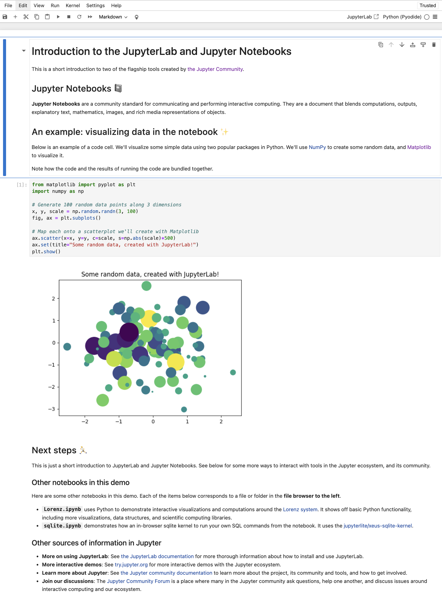
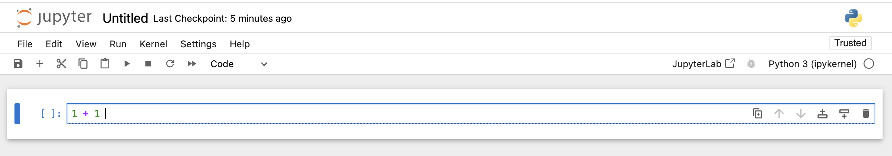
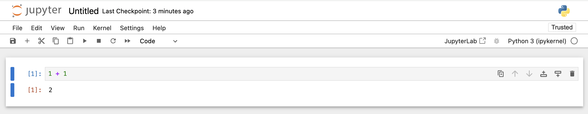
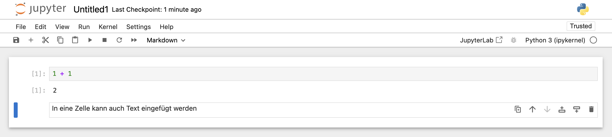
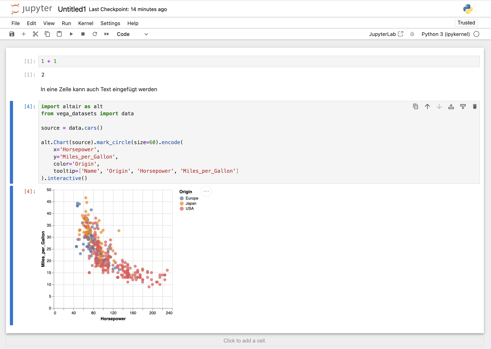
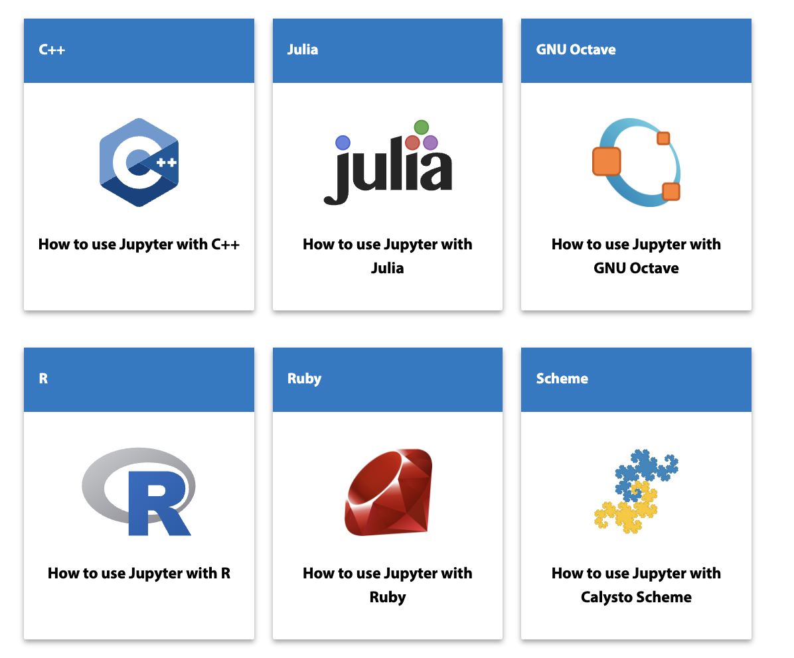
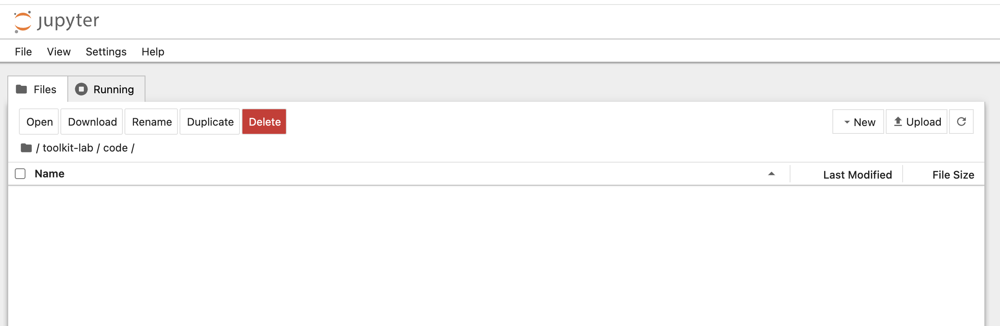
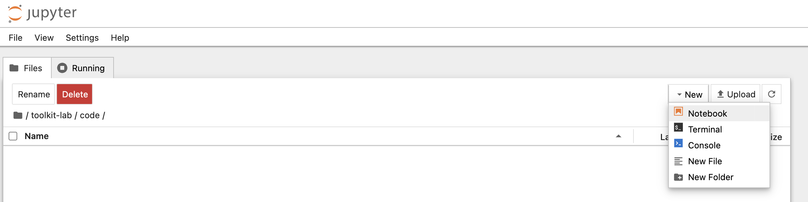
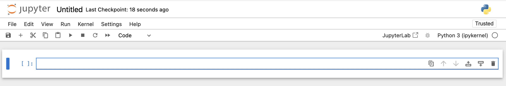
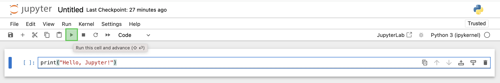

4 Jupyter Notebook
In der Welt der Data Science und künstlichen Intelligenz ist Jupyter Notebook ein wichtiges Werkzeug. Es ist in der Anaconda-Distribution enthalten und bietet eine leistungsstarke Umgebung für interaktive Code-Entwicklung und Datenanalyse.
Jupyter Notebook ist mehr als nur ein einfacher Code-Editor. Es ist eine webbasierte, interaktive Umgebung, die es uns ermöglicht, Python-Code zu schreiben und auszuführen, erklärende Texte zu integrieren und die Ergebnisse unserer Analysen direkt in der Web-Oberfläche zu visualisieren.

Im Vergleich zum eher einfachen Python IDLE bietet Jupyter Notebook eine Reihe von Vorteilen, die unsere Arbeit erheblich erleichtern:
Selektive Code-Ausführung: In Jupyter Notebook arbeiten wir mit sogenannten “Zellen”. Jede Zelle kann Python-Code enthalten, den wir unabhängig voneinander ausführen können. Dies ermöglicht uns, unseren Code schrittweise zu entwickeln und zu testen, was besonders bei komplexen Datenanalysen von Vorteil ist.

Abbildung 4.2: Jupyter Notebook-Zelle Reproduzierbarkeit: Jupyter Notebooks speichern nicht nur unseren Code, sondern auch die Ausgaben. Dies bedeutet, dass wir unsere gesamte Analyse, einschließlich der Ergebnisse, in einer einzigen Datei speichern und mit anderen teilen können. Dies fördert die Reproduzierbarkeit unserer Arbeit und erleichtert die Zusammenarbeit im Team.

Abbildung 4.3: Jupyter Notebook-Zelle und Ergbnisausgabe Nahtlose Integration von Code und Text: Mit Jupyter Notebook können wir durch die Umstellung einer Zelle in den “Markdown”-Modus (mehr dazu in dem Kapitel über Markdown) problemlos zwischen Code und Erklärungen wechseln. Dies hilft uns, unsere Gedankengänge und Analyseansätze klar zu dokumentieren.

Abbildung 4.4: Jupyter Notebook-Zelle mit Text Sofortige Visualisierung von Ergebnissen: Eines der besonderen Merkmale von Jupyter Notebook ist die Möglichkeit, Diagramme, Grafiken und andere Visualisierungen direkt im Notebook anzuzeigen. Dies gibt uns unmittelbares visuelles Feedback zu unseren Analysen und ist besonders wertvoll für explorative Datenanalysen.

Abbildung 4.5: Ausgabe einer Visualisierung Flexibilität: Neben Python unterstützt Jupyter Notebook auch viele andere Programmiersprachen. Dies gibt uns die Flexibilität, bei Bedarf zwischen verschiedenen Sprachen zu wechseln.

Abbildung 4.6: Einige unterstützte Programmiersprachen
Im nächsten Abschnitt erstellen wir einen Jupyter Notebook.
4.1 Jupyter Notebook erstellen
Hier der Prozess zur Erstellung eines Jupyter Notebooks.
4.1.1 Notebook starten
Starten des Anaconda Navigators:
Für Windows-Nutzer: Startmenü öffnen und nach “Anaconda Navigator” suchen. Ein Klick darauf startet die Anwendung.
Für macOS/Linux-Nutzer: Wir können entweder in unseren Anwendungen nach “Anaconda Navigator” suchen oder ein Terminal öffnen und folgenden Befehl eingeben:
anaconda-navigator
Jupyter Notebook starten: Im Anaconda Navigator finden wir die Kachel für Jupyter Notebook. Ein Klick auf “Launch” öffnet Jupyter Notebook in unserem Standard-Webbrowser.
Navigation zum richtigen Verzeichnis: In der Web-Oberfläche von Jupyter navigieren wir zum
code-Verzeichnis. Dieses Verzeichnis ist Teil unserer eingerichteten Ordnerstruktur, die uns hilft, unsere Projekte übersichtlich zu organisieren. Zunächst den Ordner “toolkit-lab” öffnen und dann den Unterornder “code”.
Abbildung 4.8: Ordner toolkit-lab/code in Jupyter Notebook Erstellung eines neuen Notebooks: Oben rechts klicken wir auf “New” und wählen “Notebook” aus der Drop-down-Liste.

Abbildung 4.9: Neuer Jupyter Notebook Auswahl des Kernels: Nun öffnet sich ein Fenster, in dem wir den Kernel (eine Python-Instanz) auswählen können. Für den Anfang wählen wir die von Anaconda installierte
base-Umgebung aus. Alternativ dazu kann auch Python 3 (ipykernel) ausgewählt werden.Unser erstes Notebook ist bereit: Eine neue Notebook-Seite öffnet sich mit einer leeren Code-Zelle, bereit für unseren ersten Python-Code.

Abbildung 4.10: Jupyter Notebook-Seite
4.1.2 Notebook bearbeiten
Jetzt, da unser Notebook geöffnet ist, können wir mit dem Schreiben von Code beginnen:
In die erste Zelle geben wir einen einfachen Python-Code ein, zum Beispiel:
print("Hello, Jupyter!")Um diesen Code auszuführen, drücken wir
Shift+Enteroder klicken auf den “Run”-Button in der Toolbar. Die Ausgabe erscheint direkt unter der Zelle.
Abbildung 4.11: Run-Button in der Toolbar Jupyter Notebook erstellt automatisch eine neue Zelle unter der ausgeführten Zelle. Wir können auch selbst eine neue Zelle hinzufügen, indem wir oben in der Toolbar auf die Schaltfläche “+” klicken.
4.1.3 Notebook speichern
Es ist wichtig, unsere Arbeit regelmäßig zu speichern:
Im “File”-Menü wählen wir “Save” aus, oder wir nutzen das Disketten-Symbol in der Toolbar.
Beim ersten Speichern werden wir nach einem Namen für unser Notebook gefragt. Wir nennen es
hello-jupyter.ipynbund speichern es imcode-Verzeichnis.
Die Dateierweiterung .ipynb steht für “IPython Notebook”. Diese Dateien enthalten nicht nur unseren Code, sondern auch alle Ausgaben, Markdown-Texte und sogar eingebettete Visualisierungen.
Jede .ipynb-Datei ist im JSON-Format strukturiert und enthält eine geordnete Liste von “Zellen”. Diese Struktur bietet uns mehrere Vorteile:
Selektive Ausführung: Wie bereits erwähnt können wir einzelne Codeabschnitte ausführen, ohne das gesamte Skript neu starten zu müssen. Dies ist besonders nützlich bei zeitaufwändigen Berechnungen oder beim Testen verschiedener Ansätze.
Nicht-lineare Arbeitsweise: Im Gegensatz zu traditionellen Python
.py-Skripten, die von Anfang bis Ende ausgeführt werden, können wir in einem Jupyter Notebook Zellen in beliebiger Reihenfolge ausführen. Dies unterstützt einen explorativen Ansatz in der Datenanalyse.Einfache Überarbeitung: Wir können jederzeit zu früheren Zellen zurückkehren, den Code ändern und neu ausführen, ohne den gesamten Arbeitsablauf zu stören.